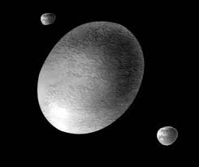

Haumea
Santa's Planet🚀 Quick Facts
- Classification: Dwarf Planet
- Location: Kuiper Belt
- Diameter: 2,322 x 1,704 x 1,138 km (1632km average) elliptical/football shape
- Mass: 4.006 × 1021kg
- Orbit Period: 285 Earth years
- Day Length: 3.9 Earth hours
- Moons: 2 (Hi'iaka and Namaka)
- Discoverer: 2004 by Mike Brown, Chad Trujillo and David Rabinowitz

A Picture of Haumea and its Moons
What is a Dwarf Planet?
A dwarf planet orbits the Sun, is round, but hasn't cleared its orbit of other debris.
📌 Did You Know?
- Nicknamed Santa's planet as it was discovered just days after Christmas time
- One of two dwarf planets named after an Easter Island god, namely, the god of fertility
- One of the fastest spinning large objects in the solar system, it's high speed stretched Haumea to be elongated in shape
- In 2017, Haumea was discovered to surprisingly have a ring system
🔭 Observation
- Best time to view: During its annual opposition in April
- Telescope needed: Yes
- Brightness: 17.3 magnitude
🔬 Scientific Data
| Orbital Eccentricity | 0.195 |
| Axial Tilt | 78.9° - 81.2° |
| Gravity | 0.44 m/s² |
| Surface Temperature | -240°C |
| Surface Composition | Crystalline water ice |
| Albedo | 0.51 (bright) |
🔍 Discovery Story
- Discovery Date: December 28th, 2004
- Discoverer: Mike Brown, Chad Trujillo and David Rabinowitz
- Telescope: Palomar 48" Schmidt telescope
- Classification Debate: As 2 separate teams (Mike Brown's team and Jose Orteno's team) had discovered Haumea within a very short timeframe, it created debate over who the credit was due to
- Name Origin: Named after the Easter Island god of fertility
🪐 Characteristics
- Surface: Crystalline water ice
- Atmosphere: Lacks a significant atmosphere
- Special Features: Football shaped, highly reflective surface with a distinct red spot
- Moons: Hi'iaka and Namaka
- Ring System: A single 70km wide ring made of ice particles
⚖️ Dwarf Planet vs Planet
| Criteria | Planet (Earth) | Dwarf Planet (Haumea) | Difference |
|---|---|---|---|
| Orbit Clearing | ✅ Has cleared orbit | ⚠️ Shares orbit with debris | Key distinction |
| Size | 12,742 km | 1,632 km | 7.8 times smaller |
| Location | Inner Solar System | Kuiper Belt | Different region |
🛰️ Exploration
- First Image: Hubble Space Telescope (2006)
- Current Studies: Ground-based telescopes, JWST
- Future Missions: None so far
Most dwarf planets are too distant for spacecraft visits.
New Horizons' Pluto flyby in 2015 was a historic first!
📊 Among Dwarf Planets
| Dwarf Planet | Size Rank | Location | Moons | Discovered | Distance from the Sun |
|---|---|---|---|---|---|
| Pluto | #1 Largest | Kuiper Belt | 5 | 1930 | 5.91x109km2 |
| Eris | #2 | Scattered Disc | 1 | 2005 | 1.01x1010km2 |
| Haumea | #3 | Kuiper Belt | 2 | 2004 | 6.45x109km2 |
| Makemake | #4 | Kuiper Belt | 1 | 2005 | 6.85x109km2 |
| Ceres | #5 Smallest | Asteroid Belt | 0 | 1801 | 4.14x106km2 |
🧠 Quick Quiz
Q: Why does Haumea look like a cosmic egg?